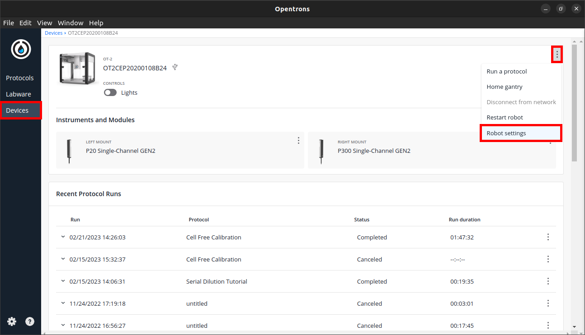
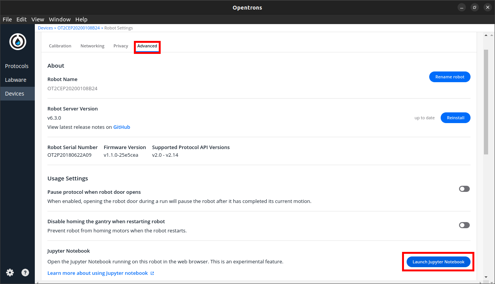
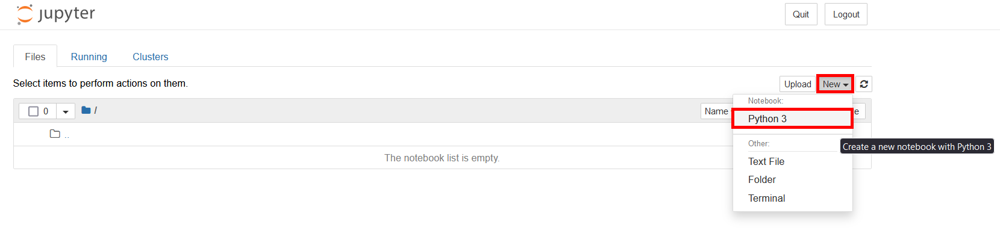
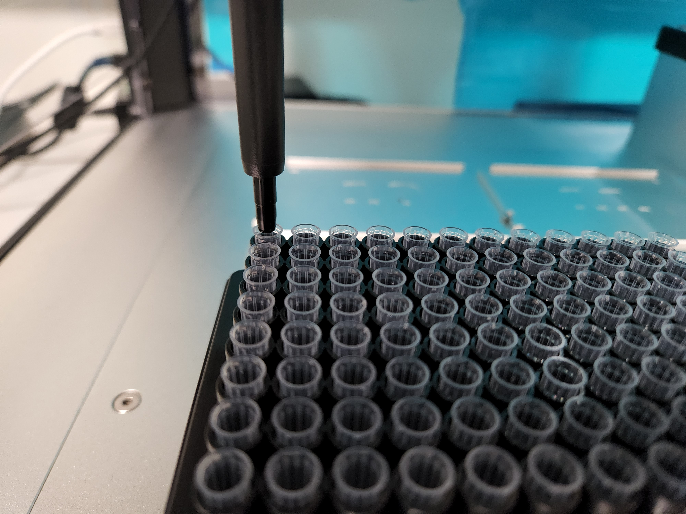
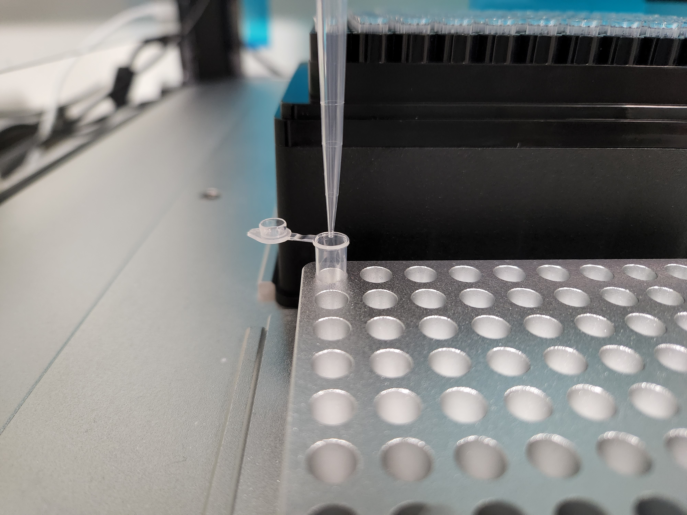

In this tutorial, we will explore how to control the Opentrons OT2 robot in real-time using Jupyter Notebooks. Jupyter Notebooks are interactive computing environments that allow users to create documents that combine code and markdown text which can be run in real time.
What this means for the use of the OT2 is that commands can be written and run in the robot in real time. This makes for an incredibly quicker method of prototyping experimental steps (e.g. trying to find the best way to pipette a liquid with high viscosity), since you can use the OT Python API in separate chunks. While the protocols written and run on Jupyter Notebooks are more hands-on than just using the Python API, you don’t have to restart the entire protocol when a step goes wrong. Additionally, you can have labware calibration steps at any point, making it easier to have multi-step protocols where you need to change the deck configuration or manually handle labware, without having to leave the protocol.
Unfortunately, using this environment has its downsides. This is currently an experimental feature, meaning the way it functions may change in later versions of the OT software and on their next robots. You also won’t be able to predict some aspects of the protocol automatically (predicting pipette tip usage, run time, etc) and interact with the Opentrons GUI.
It is recommended to familiarize yourself with the API and python commands first through reading the documentation and following along some of our other tutorials. Here, we will first cover the basics of setting up the use of Jupyter Notebooks on the OT2, for which you should also read Opentrons’ official guidance for updated information. We will also cover some tips and best practices on how to write, calibrate, and run protocols in this environment.
Since the Notebook runs in the Raspberry Pi inside the OT2 robot, Jupyter and basic python modules come pre-installed. To launch Jupyter with the robot, access your robot through the Opentrons app, open the three-dot menu (⋮) in the top right and select “Robot Settings”.
Select the “Advanced” tab and scroll down to “Jupyter Notebook”. When you click “Launch Jupyter Notebook”, your standard web browser should open a tab with the Jupyter Notebooks environment.
From here, you can either open pre-written protocols or start writing your own with clicking “New > Python3” on the top right.
Before you can send commands to the robot, you first need to get the OT module, the protocol API and declare your labware, like you would in a normal Python-based protocol. The difference here is that you don’t need a “run” function, since you will be running all code in real time. Start the protocol running the cell:
Then declare your labware (modules, plates, tipracks, pipettes) in a new cell:
While calibration of labware on Protocol Designer and Python-based protocols is done before each run with the Opentrons app GUI, this is not an option for Jupyter Notebook protocols. For this reason, we have calibration cells for each piece of labware that set an offset and move into that position to test it. This cell’s numbers can then be tweaked, and you can re-run the same cell until you’re happy with the calibration. We recommend you always calibrate you labware before running a protocol and after any labware is moved while performing a protocol.
At the start of a protocol, you first need to test the offsets of your tipracks. If you’re unsure of which values to use (or if you think starting with all zeroes is going to be significantly off), you can run an empty protocol with the Opentrons App and get your initial calibration offsets from that. You can use those values on the cell below or just start with all zeroes:
When you’re happy with the positioning, test the calibration by picking up a tip:
If a tip is picked up successfully, you can proceed with the calibration of the remaining labware. For our example, this is will only require a single cell, but you will need more if your protocol requires more plates and tubes. Here the objective is to get the tip aligned to the centre of your well and level with the well’s top:
Sometimes a labware definition doesn’t accurately represent the dimensions of real labware. This is especially impactful in plates with many rows and columns of wells, and a slight difference in expected-to-real well size adds up as you go along the plate. To test for this, you can optionally add a cell to move to the last well and adjust the previous cell accordingly:
Once your labware calibration is done, you’re ready to proceed with the rest of the protocol. You can keep using the current tip or choose to return it and start from the next one:
Do not rely on the “Run All” commands at the top menu bar. Calibration steps and others may require human interaction and the code will not stop and wait in between cells.
When calibrating labware, always make sure there is a tip attached to the pipette. Without a tip, the robot will interpret the end of the nozzle as it’s extremity for the move_to() command and will try to align it with your wells. This can cause bumping with other labware and thus damage the equipment.
If something unexpected happens, it can be useful to use the protocol.home() command to reset the robot to a neutral state (starting position and no tips/liquid).
If you close the Notebook or restart it’s Kernel in any way, the robot will forget it’s position, any labware and tip tracking. We recommend keeping the notebook open for the duration of the protocol.
While protocols in this environment can’t get GUI messages, you can still communicate important notes and steps to users with Markdown cells or commented lines. To make comments in the code use # prefacing a single line or use triple quotes flanking multiple lines. To change a cell from code to markdown, select that cell and choose “Markdown” at the top menu bar. Refer to a Jupyter Notebooks Markdown cheatsheet for a quick reference on how to write on these cells.
The Jupyter Notebook can’t just pull names from your custom labware list in your OT app like a Python protocol would. Here, you must import the labware files into the OT2 Raspberry Pi and load them into the script with python. We recommend having a folder specifically for custom labware, then you can use the “Upload” button to load any custom labware file into the robot’s system:
Then, in your script, you must open that file and load the labware definition:
Note you will have to import the json library at the start of your script and fill in your file’s path appropriately (the quotation marks are necessary).